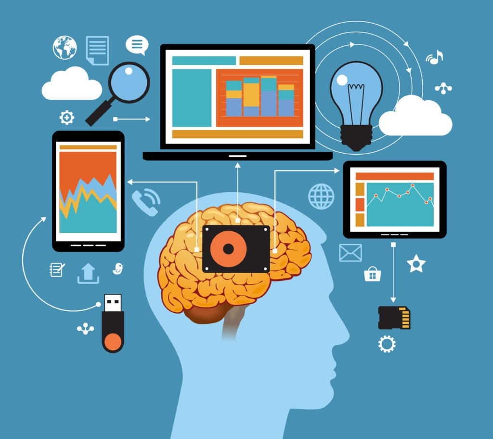
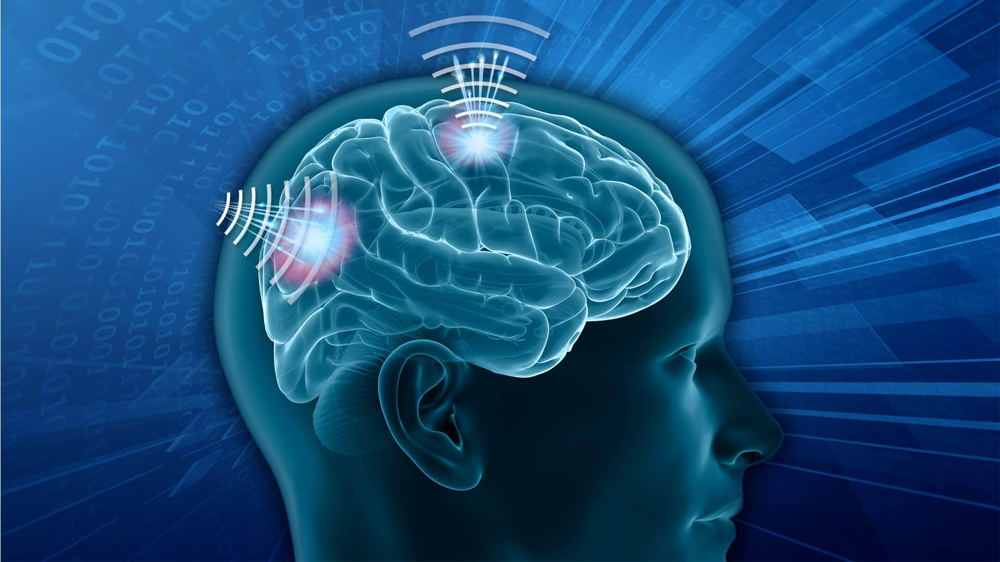
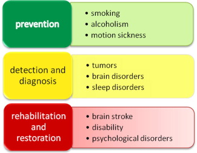

Brain-computer interfaces (BCIs) allow their users to communicate or control external devices using brain signals rather than the brain's normal output pathways of peripheral nerves and muscles.

Motivated by the hope of restoring independence to severely disabled individuals and by interest in further extending human control of external systems, researchers from many fields are engaged in this challenging new work.
BCI research and development have grown explosively over the past two decades. Efforts have recently begun to provide laboratory-validated BCI systems to severely disabled individuals for real-world applications.
In this review, we discuss the current status and future prospects of BCI technology and its clinical applications. We will define BCI, review the BCI-relevant signals from the human brain, and describe the functional components of BCIs.
We will also review current clinical applications of BCI technology, and identify potential users and potential applications. Finally, we will discuss current limitations of BCI technology, impediments to its widespread clinical use, and expectations for the future.
BCIs do not read minds. Rather, a BCI changes electrophysiological signals from mere reflections of central nervous system (CNS) activity into messages and commands that act on the world and that, like output in conventional neuromuscular channels, accomplish the person's intent.
Thus, a BCI replaces nerves and muscles and the movements they produce with hardware and software that measure brain signals and translate those signals into actions .
 Successful BCI operation depends on the interaction of two adaptive controllers: the user, who produces specific brain signals that encode intent and the BCI, which translates these signals into output that accomplishes the user's intent.
Aiming to replace the conventional neuromuscular output channels, a BCI must function as an adaptive close-loop control system.
It must provide real-time feedback to the user, by which the user can fine-tune the brain signals in order to optimize the desired output. It should be noted that a system that simply records and analyses brain signals and does not provide the results of the analysis to the user in a real-time interactive way is not a BCI.
